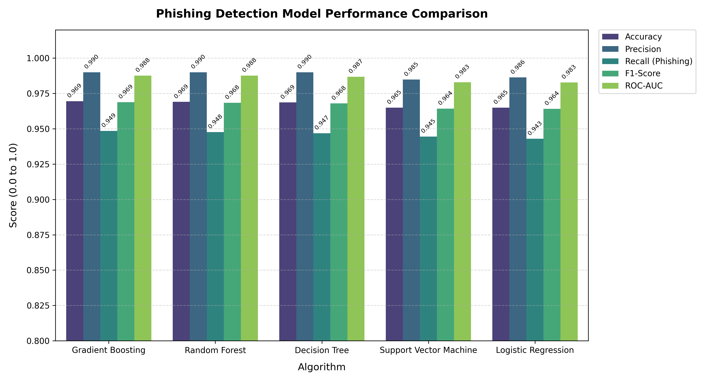
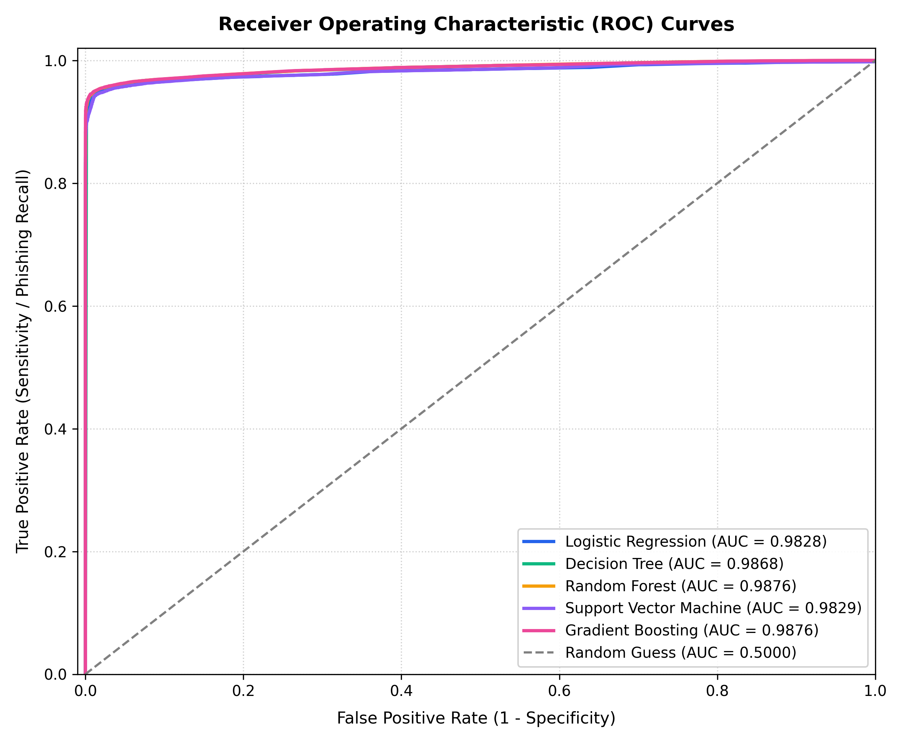
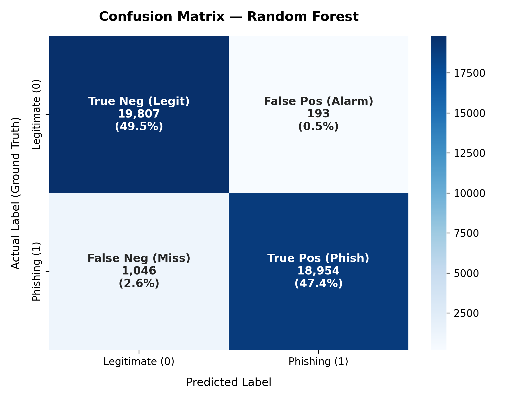
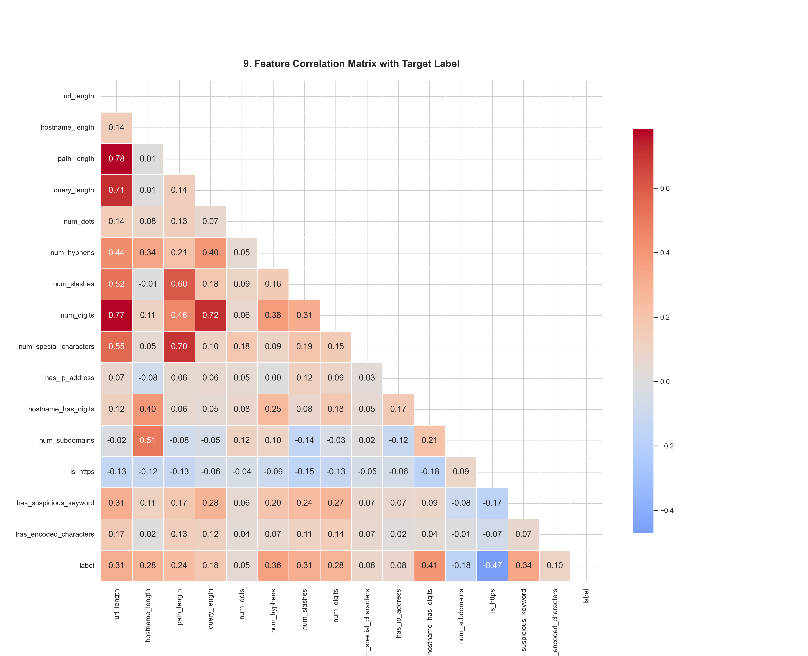
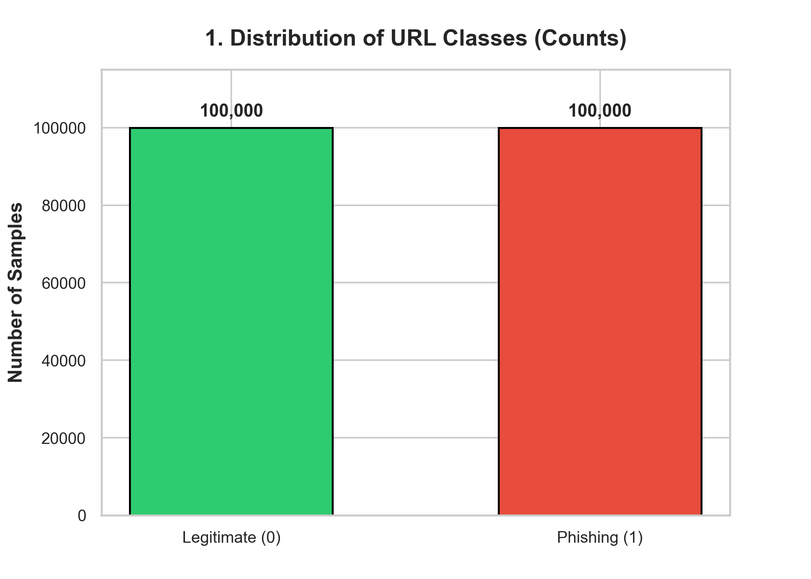

Multi-Layer Risk Classification Tiers
Standard registered domains adhering to canonical naming conventions with no critical structural anomalies or credential-harvesting lures.
Borderline statistical probabilities or legitimate-looking links that trigger heuristic warning signals (e.g., URL shorteners, multi-nested subdomains).
High statistical confidence of phishing or explicit critical anomalies (naked IP address hosts, userinfo '@' symbol spoofing, urgent authentication keywords).
Production Model Performance
Gradient Boosting ClassifierRecent Session Audits
No URLs scanned in this session yet. Test one of the sample lures above.
URL Risk Assessment Console
Inspect any web link in real-time. Features are derived strictly via lexical parsing without visiting the host or downloading remote payloads.
Model Analytics & Comparative Benchmarks
Empirical comparative analysis of 5 supervised machine learning algorithms evaluated across 40,000 held-out test URLs.
Algorithm Comparison Matrix
results/reports/model_comparison.csv
| Model Architecture | Accuracy | Precision | Recall (Catch Rate) | F1-Score | ROC-AUC | FPR | Train Time |
|---|---|---|---|---|---|---|---|
| Gradient Boosting SELECTED BEST | 96.95% | 99.00% | 94.85% | 96.88% | 0.9876 | 0.96% | 8.55s |
| Random Forest | 96.90% | 98.99% | 94.77% | 96.84% | 0.9876 | 0.97% | 2.88s |
| Decision Tree | 96.86% | 98.99% | 94.69% | 96.79% | 0.9868 | 0.97% | 0.30s |
| Support Vector Machine | 96.50% | 98.48% | 94.45% | 96.42% | 0.9829 | 1.46% | 11.67s |
| Logistic Regression | 96.49% | 98.63% | 94.29% | 96.41% | 0.9828 | 1.31% | 1.28s |
Why Recall is Paramount in Phishing Defense
In cybersecurity threat detection, a False Negative (a malicious URL slipping past undetected) can lead directly to stolen corporate credentials, ransomware payloads, or financial loss. While raw accuracy measures total correctness, Recall (Catch Rate) explicitly quantifies what percentage of genuine attacks are caught (94.85% for Gradient Boosting).
Balancing Precision to Prevent Alert Fatigue
A detector that blocks legitimate domains causes severe disruption and alert fatigue for SOC analysts. The Gradient Boosting pipeline achieves 99.00% Precision with only a 0.96% False Positive Rate (192 out of 20,000 benign URLs flagged), ensuring reliable day-to-day operations.
Model Evaluation Visualizations Gallery





Audit Scan History
Real-time local audit logs of URLs scanned during this browser session. Persisted locally via browser storage without transmitting data to external third parties.
| Timestamp | Submitted URL | Classification | Risk Tier | Threat Score | Action |
|---|
About SENTINEL
Architecture, engineering methodology, feature extraction taxonomy, and collaborative contributor responsibilities.
5-Stage Defense-in-Depth Pipeline
URL Intake
Safely sanitizes and validates input string without making external network calls.
Lexical Engine
Computes 28 structural, domain, and suspicious keyword signals in under 2 ms.
ML Classification
Trained Gradient Boosting model outputs statistical class & continuous probability.
Risk Engine
Applies cutoff thresholds and heuristic escalations for critical red flags.
Explainable Verdict
Outputs plain-language indicators, threat score (0-100), and security advisories.
Engineering Team & System Contributions
Siddhi Shetkar
Data Engineering & Exploratory Data Analysis- • Dataset collection, cleaning, and quality audit across 200,000 URLs
- • Label verification and bijective normalization (0 = Legitimate, 1 = Phishing)
- • URL feature extraction engineering (28 numeric signals)
- • Exploratory Data Analysis (EDA) and 11 empirical distribution figures
- • Stratified train/test dataset preparation (160k train / 40k test)
Sankeerthana Thoviti
Machine Learning, Risk Engine & Application Architecture- • Supervised ML model development (Gradient Boosting, Random Forest, DT, SVM, LR)
- • Cybersecurity evaluation framework (Precision, Recall, ROC-AUC, FPR)
- • Multi-layer risk assessment engine with heuristic escalation rules
- • Serialization, automated testing suite (46 test cases, 100% pass rate)
- • SENTINEL REST API backend and glassmorphism interface architecture
Extracted Feature Taxonomy (28 Features)
| Category | Feature Name | Type | Security Rationale |
|---|---|---|---|
| Length & Structural | url_length |
Integer | Obfuscation and nested redirection tracking targets elevate URL character count. |
hostname_length |
Integer | Fraudulent hosts incorporate brand names or high-entropy random characters. | |
num_dots, num_hyphens |
Integer | Excessive dots indicate subdomains; hyphens are frequent in typosquatting. | |
num_slashes, path_length |
Integer | Deep directory trees often mask cloned login scripts on compromised servers. | |
num_digits, num_special_characters |
Integer | High digit/symbol density correlates with randomized malicious endpoints. | |
| Hostname & Domain | has_ip_address |
Binary (0/1) | Legitimate commercial sites use registered domains; raw IPs indicate threat nodes. |
num_subdomains, has_multiple_subdomains |
Integer / Binary | Public Suffix List analysis detects subdomain nesting on free hosting platforms. | |
is_https |
Binary (0/1) | Correlated with other features; unencrypted HTTP is an elevated warning signal. | |
has_unusual_port |
Binary (0/1) | Non-standard ports (e.g., :8080, :8888) frequently indicate temporary attacker testing. | |
| Suspicious Indicators | has_suspicious_keyword |
Binary (0/1) | Authentication lures (login, verify, account, password, banking). |
has_url_shortener |
Binary (0/1) | Shortening services (bit.ly, tinyurl, t.co) conceal destination domains from inspection. | |
has_at_symbol |
Binary (0/1) | Browsers treat strings before '@' as userinfo, redirecting to the host that follows. | |
has_encoded_characters |
Binary (0/1) | Hex percent-encoding (%20, %2f) masks deceptive directory segments. |
Limitations & Future Enhancements
Lexical Boundary: Static URL analysis provides immediate, lightweight detection with zero outbound latency and no risk of payload execution. However, sophisticated attackers deploying legitimate cloud services (e.g., Cloudflare Workers, Firebase) or registered domains without obvious keywords cannot be diagnosed purely through lexical strings alone.
Future Roadmap: Production deployments should integrate external real-time signals, including:
- • Real-time DNS records, domain age, and WHOIS registration history.
- • Headless sandboxed DOM inspection and visual screenshot brand matching.
- • Native Chrome/Firefox browser extension integration for proactive user defense.